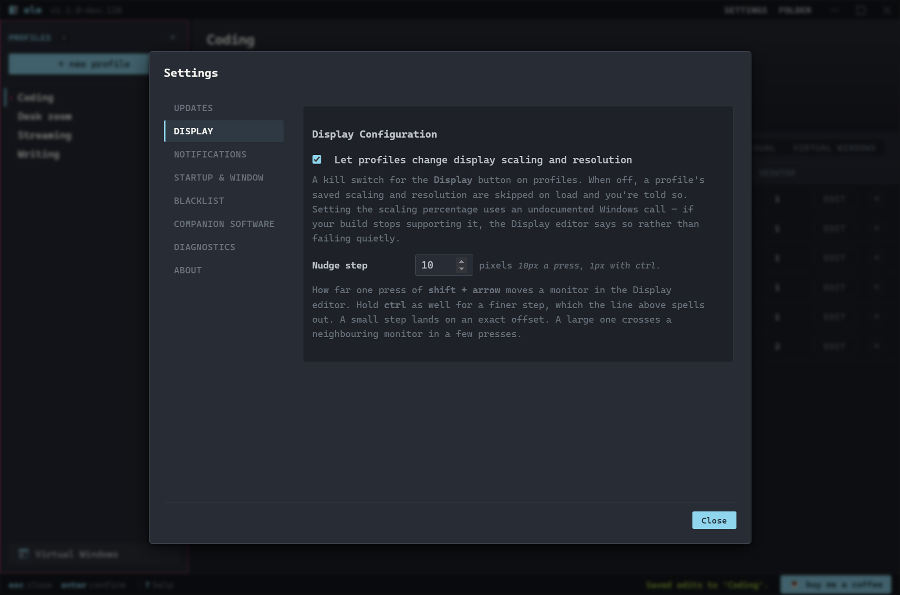
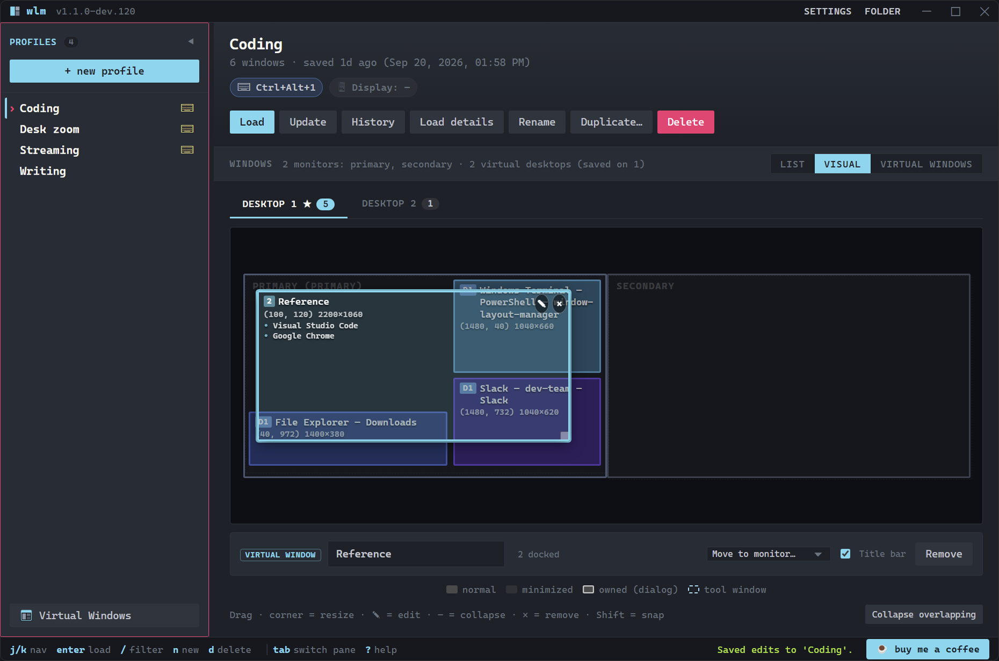

wlm:~$ wlm --tutorial
Window Layout Manager Feature Walkthrough
Everything the app does, in the order you'll meet it. Ten minutes, start to finish. Need the app first? Grab it on the download page.
// updated alongside each release · screenshots and clips are from the current build · clips play on hover
wlm:~$ ls topics/
- The Main Window
- Saving & Loading Layouts
- Global Hotkeys
- The Visual Editor
- Virtual Windows
- Precise Edits, Undo & History
- Display Zoom, Resolution & Arrangement
- Virtual Desktops
- Command Palette & Keyboard
- Updates
- Blacklist
- Companion Software
- Diagnostics & Reporting a Bug
- Startup, Window Positions & About
- CLI, Links & Automation
wlm:~$ wlm --tutorial basics
The Main Window
Profiles live in the left sidebar. The selected profile's windows fill the right pane, one row per window: the app, its title at save time, and where it goes back to.

The Coding profile: six windows across two monitors and two virtual desktops. Hover the picture to watch switching profiles swap the layout in.
- ⌨ chip - The profile has a global hotkey.
- Footer hints - The whole app drives from the keyboard: j/k to move, Enter to load, / to filter, ? for the full map.
wlm:~$ wlm --tutorial profiles
Saving & Loading Layouts
Arrange your windows the way you like, hit "+ new profile", name it, done. WLM captures every visible window's position, size, state, monitor, and virtual desktop.
Hovering a profile shows a card with a scaled map of where its windows land, before you commit to anything.
- Load - Puts every captured window back, even after apps restarted, titles changed, or Windows shoved everything onto one screen. The matcher re-finds windows by process, class, title, owner, and position.
- Update - Re-captures the current arrangement into the selected profile. Hotkey, history, per-window colours, "recognise by" rules, and Virtual Windows all survive.
- Starting windows - Explorer folders and consoles don't survive a restart, so they start when missing by default: Explorer in the same folder, a console where it was working. The choice lives on the Virtual Windows page's member rows: use the window that's open, start one if none is, or always start a new one. Any app can be set to start too, from the program its window was saved from. Tick "App default" beside a member's choice and every window of that app inherits it, unless a window says otherwise. A window started fresh never takes over one that was already open.
- Load details - A per-window report of the last load: what matched, what moved, what was missing.
- A Load is one pass. It's finished when it returns, and nothing keeps moving windows afterwards. An app that opens slowly? Press the hotkey again once it settles.
%APPDATA%\window-layout-manager\profiles (the "FOLDER" button opens it). Hand-editable, with schema autocomplete in most editors.wlm:~$ wlm --tutorial hotkeys
Global Hotkeys
Click the hotkey chip on any profile and press the combination you want. WLM records it live and warns about conflicts with other profiles.

Hotkeys fire from anywhere. The WLM window doesn't need to be open.
wlm:~$ wlm --tutorial display
Display Zoom, Resolution & Arrangement
A profile can set your display scaling (the percentage in Settings → System → Display that everyone calls zoom), your resolution, and where your monitors sit, before it puts your windows back. Click the Display chip on any profile.

Every dropdown is filled from what Windows reports for that monitor. Nothing is hardcoded.
Displays are named by where they are and what size they run ("Left 4K", "Right 1080p"), because Windows reports the same "Generic PnP Monitor" for nearly every one. A virtual display says so.
- Scaling - Pick a percentage, or Step up one / Step down one. The steps move one rung along whatever ladder that monitor supports, worked out when you press the key, which makes them the ones to put on a hotkey.
- Resolution - Every mode the driver offers, with its refresh rate. "Leave unchanged" means the profile won't touch it.
- Each row shows what the monitor is set to right now, which is what you're changing from.
Arranging Your Monitors
Drag a monitor in the picture at the top and it moves, the way the numbered boxes move in Windows' own Display Settings. A monitor dropped onto another gets pushed back out. One dropped in empty space gets pulled back into contact. A short drag still just selects.
Hold Shift to snap to the nearest edge, with a line marking what the two displays line up on. From the keyboard, Shift+arrow nudges a selected display 10 pixels (the step is a setting), Ctrl+Shift+arrow a tenth of that, and the presses add up. The Position fields take an exact offset. An arrangement that would leave a display touching nothing is refused, and the editor says so; along an axis two displays already share, neither can move, and the editor names the axis that's free. The primary's fields are off, since it's the origin: moving it shifts everything else the opposite way.
Windows enforces three things about any arrangement and rewrites yours if you break them: the primary sits at the origin, nothing overlaps, and every display touches another. WLM settles the layout before writing it and tells you if closing a gap moved a display you weren't touching.
Saving the profile saves the arrangement with it, positions for every display, because "the portrait one is on the left" means nothing without the rest. Apply now tries the whole thing on your real displays with the usual 15-second Keep-or-Revert countdown, and the revert puts the arrangement back too. Ctrl+Z / Ctrl+Y work inside the editor before anything reaches your displays, and the editor names what it took back. A monitor arriving or leaving, or an Apply now, starts the undo trail over, because both leave it describing a desk that's gone.
A chip under the picker says which of three things is true, and the button beside it does the matching thing:
- Not saved with this profile → Save this arrangement. Pins your monitors where they sit right now, no dragging needed.
- Changed from your current arrangement → Revert. Puts the boxes back where your monitors physically are, leaving a saved arrangement alone.
- Saved with this profile → Remove arrangement. Drops the arrangement, keeps the rest of the display step.
Changing Several Monitors Together
Ctrl+click adds or removes a monitor, Shift+click takes the run between two, the same gestures the visual editor uses for windows. Several selected get one set of controls offering only what every one of them can do, and where they disagree the editor says so: scaling reads now mixed, with a "Multiple values" option that leaves each display as it is. Orientation only changes if you choose one, so a landscape and a portrait display together don't get the second one rotated by accident.
Earlier Arrangements
The countdown covers the change you just made. History covers the one from yesterday: WLM records your arrangement before each change it applies, whatever triggered it. Each row draws the desk as it was, with the primary picked out. Use this draws it in the editor; nothing moves until Apply now. The list belongs to the monitors it describes, so a row naming a monitor you no longer have is greyed out and says which.
Your Windows Come with the Monitors
Swap your left and right monitors and the windows come with them, keeping the same spot on the same panel. Minimised windows are left alone: a maximised one already follows its monitor, and a minimised one has no position worth keeping.
Picking a Resolution
Resolution is two dropdowns, size then refresh rate, the way Windows and NVIDIA both do it. Sizes are grouped by shape (16:9, 4:3, 21:9), the largest is marked, and the list has a search box: 1440 finds every mode with 1440 on either side, 2560 1440 or 25 14 narrow it, and a word searches the labels. Arrow keys, Home, End, Enter and Esc all work. Pick a size that can't do your current rate and WLM keeps the rate where it can, or falls back to the highest that size offers and says it did.
The rate dropdown opens on Highest this size offers, which is a request rather than a blank: worked out on the display the profile lands on, not fixed at save time, so one profile asks for the best each display can do. Pick a number instead and WLM asks for exactly that.
Orientation sits before resolution because it decides what resolutions there are; Windows only reports sizes for the orientation a display is in. Flipping between landscape and portrait keeps the same physical resolution selected, sizes are written long side first whichever way the panel faces, and what goes to Windows stays in the orientation Windows is speaking.
A mode your display doesn't currently offer is still saved, flagged not offered yet, and applies the moment the driver starts listing it. That matters for virtual displays, whose mode lists change with what the driver has been told about.
Custom Resolutions
A virtual display only offers what its driver knows about. WLM names the driver behind yours: Parsec, Apollo, spacedesk, the community Virtual Display Driver, a Remote Desktop session, a VM's adapter. Parsec is the only one that publishes a way for another app to add resolutions: on a Parsec display, Custom resolutions under the list registers two of them behind one administrator prompt, and they show up after a disconnect and reconnect. On any other virtual display the same button reads About this display and says who can change the list: spacedesk takes it from the client device, Apollo builds its display to match each stream, the community driver reads a settings file of its own.
Select that one display on its own and the button is there; where one driver runs several displays it's on any of them. With none of that driver's displays up it appears only where a profile asks for a size the driver doesn't list, which is how you register a size before the next session.

The rows WLM didn't write are read-only, marked with a dash instead of a slot number. Parsec rewrites those itself on every connect.
Two limits worth knowing:
- They won't appear in Parsec's own resolution picker. That list is fixed. Apply the resolution from WLM, or set Parsec's host Resolution to "Keep Host Resolution" so it stops overriding what WLM sets.
- Parsec owns three of the five slots. It rewrites slots 2, 3 and 4 on every connect with your client's screen sizes. WLM only touches 0 and 1.
Zoom Presets
Tick Display-only preset and the profile stops being a window layout: no windows saved, no windows moved, just scaling and resolution.

"Desk zoom" is a display-only preset on Ctrl+Alt+0.
It's still a profile: hotkey, tray menu, Jump List, the command palette, --load=, wlm:// links. A display-only preset never moves a window: it exists to set your displays up, and the layout you load afterwards does the rest.
Turning It On, and What It Can't Promise
The kill switch is under Settings → Display, on by default; turn it off and a profile's display step is skipped, with WLM saying that's why. Resolution uses a documented Windows API. Scaling doesn't, because Windows exposes none: WLM uses the same internal call the Settings app does, behind a capability check, and if your build stops accepting it the scaling controls switch off and say why while resolution carries on. A percentage your monitor can't do is clamped, and you're told to what. After every change WLM re-reads the display to check the value landed, which catches a Windows 11 24H2 bug where a resolution change on a virtual display reports success while nothing happens. Some virtual adapters, Parsec's among them, report a scaling range that disagrees with what Windows is doing; there the editor shows both numbers and says the control may not behave.

Settings → Display: the kill switch, the nudge step, and nothing else to go wrong.
wlm:~$ wlm --tutorial visual
The Visual Editor
Switch the view to "VISUAL" for a minimap of your saved layout: monitors to scale, one tab per virtual desktop, every window draggable.

Drag to move, corner-drag to resize, Shift while dragging to snap to monitor edges and other windows.
- Arrow keys nudge whatever is selected: 10 pixels a press, 1 with Shift, crossing onto the next monitor the way a drag does. Holding a key down is one undo step.
- Select a window for "Edit", "Block app" and "Remove" below the canvas. Enter edits, x or Delete removes.
- Select several at once the way you select files: Ctrl+click adds or removes, Shift+click takes the run between, Ctrl+Shift+click adds a run to what you had. With more than one selected the panel offers move to monitor, set state and remove; position and size are deliberately absent, because one X applied to twelve windows stacks all twelve. Docking isn't here either: it happens on the Virtual Window itself, the only place one action can both move the window and record it.
- Drag a window between monitors and its target monitor and relative position update on their own.
- Every window can be given its own colour from the edit dialog, so the ones you care about stand out.
- Edits auto-save after a beat. The "unsaved" badge says when a write is pending.
Reaching a Window Behind Another
The "+N" badge says something is under a window, and clicking cycles through the stack. To drag the one underneath, fold the one on top: each window has a collapse control that shrinks it to its title row, and "Collapse overlapping" in the legend folds everything covering something.

Collapsed windows in the same stack cascade instead of stacking, so every one stays clickable.
This is a viewing aid only: a collapsed window still loads at full size, and the folding is forgotten when you switch profiles.
wlm:~$ wlm --tutorial virtual-windows
Virtual Windows
A Virtual Window is a real window WLM opens and owns, not a shape drawn in the editor. Give it a name and a monitor, then drag other windows onto it to dock them, the way you'd dock a tool window in Visual Studio or Rider. Everything about what's inside a container is done on the container, from a panel it carries itself. The app shows you what's docked; the container is where you change it.
Dragging a Window In
Pick up any window by its title bar and drag it over a Virtual Window. Guides appear: four edge targets around the pane under your cursor, plus a shaded rectangle showing exactly the shape the window is about to take. The rectangle isn't a guess; it's the same rectangle the drop uses, so what you see under the cursor is what you get when you let go.
Aim at the edge two panes share and the targets offer the pair as well as the single pane, so a third window can go under both. The group is outlined with a dashed frame, so which of the two it means is clear before you let go.
Two windows of the same application dock independently, including two File Explorer windows. Hold Ctrl while you drag and nothing docks, the same as Ctrl in Visual Studio. Drop in the middle of an occupied pane and nothing happens: WLM won't stack windows into a tabbed group, because a tabbed group has to hide every window in it but the one on top, and hiding a window nobody asked to hide is the same kind of thing as taking it over.
Creating a Virtual Window
Virtual Windows have their own page: press the Virtual Windows button in the sidebar to see every one you've made, whichever profiles use it. "+ New virtual window" adds an empty container; the tabs across the top pick which one you're looking at. Rename it, open it, delete it (press Delete twice), and choose who uses it: All profiles, or a tick per profile. Its docked windows have the same List and Visual views a profile has, with the virtual window as the monitor. A profile's own Virtual Windows tab is a picker: tick the ones that profile should load, or make a new one there and it starts out ticked. Lost track of one? "Show container" on its card, or Open on the page, brings the real window forward with its panel already open.

On the canvas a container is drawn the way an ordinary window is. A dashed frame and the docked-count badge are the only things marking it out.
It drags, resizes, and moves between monitors just like a window. The docked windows stop having a box of their own once they're in one: the container represents them, with their names drawn on its box and a row of its own in the list view, members listed underneath, and a "Manage" button that jumps to its card.
The Container's Own Panel
Every container has a button beside its title bar that opens a panel listing what's inside. Each row can Undock (the window leaves and gets the size it walked in with, right there and then) or Collapse (the window stays open but hides; its pane is labelled and it waits in a flyout of restore buttons at the container's top right, one press away).
Add window is the way to dock something without dragging it: every window you have open, plus every window this profile saved that isn't running. That second group is how you build a layout around an app you haven't started yet; it goes into the saved layout and lands there on the next Load.
A filled dot is a window the container is holding now; a hollow one is saved for this container but not running. Either can be undocked.
The panel takes its height out of the space the panes use rather than floating over them, which is the only way it can work at all: a docked window covers its whole pane, so anything drawn inside that area would be hidden behind a real window. Opening the panel shrinks the panes, everything shuffles down to match, and closing it gives the space back.
Resizing While Docked
Two docked windows that share an edge have a splitter in the gap between them. Drag it and both resize together, live; let go and the position is saved with the profile. Docking resizes the window you drop, because a pane decides how big its member is. The size the window arrived with is remembered and handed back the moment you undock it. Docking borrows a size; it doesn't replace one.
Some windows won't take the size a pane hands them and land at their own minimum instead, while Windows reports the resize as successful. WLM checks afterwards and says so on the container's title bar, so you're not left wondering why one window looks wrong.
Fully Docked
The toggle on the container's title bar takes the frames off. Every window inside loses its title bar and borders and fills its pane exactly, edge to edge, so a container holding three windows reads as one surface with three panels. The gaps between them belong to the container.
Nothing is redrawn and nothing is re-hosted. Each window is still the real application, still running, still in alt-tab, still taking your clicks and your typing. WLM hides the real window and draws it on the container at its pane's size, which is why video keeps playing and a text box still takes the caret.
Apps that draw their own title bar inside their window, which File Explorer and most browsers do, are measured and cropped rather than left with a strip of chrome showing. A window WLM can't take over stays an ordinary docked window, and the container's bar says so instead of leaving you to work out which one looks wrong. The same toggle puts every title bar and border back, and none of this depends on a clean exit: a separate watcher puts everything back if WLM's process dies, and WLM restores anything still on that list at its next start.
Out of the Way, Not Gone
The container's close button doesn't close anything: it hides the whole group, everything still docked, and the tray icon grows a badge saying something is hidden. Right-click the tray and each hidden virtual window has its own "Show" entry. A profile Load does the same to the virtual windows the profile doesn't use, and loading a profile that names one brings it straight back. Deleting a container from its page is the real removal: its members are released, undocked at the size they came in with, and anything WLM started fresh for it is closed with it.
Working with a Virtual Window
- Drag the container anywhere and every docked window goes with it; what's docked where inside doesn't change, only where the whole thing sits. The members follow frame by frame as you drag, not with a catch-up jump at the end.
- "Move to monitor…" in the strip sends the container to another display; its members follow, the same as any drag.
- A container's own title bar can be switched off from its card. Hidden, the container becomes a plain backdrop, and sweeping your mouse to the top edge is what brings the controls back, along with the small handle in the corner. It's still draggable either way, and the toggle never touches anything docked inside it.
- The title bar has its own minimize and maximize. Minimizing takes the docked windows with it; maximizing keeps every one of them on screen, title bar included, flush to the edges.
- A container has its own taskbar button and icon, a window holding panes, and all containers share a taskbar group apart from WLM's. Clicking the container, or that button, brings it and everything docked in it forward together. Docked windows leave the taskbar while they're docked and come back when they're undocked or the container is deleted. Settings, under Virtual Windows, turns that off.
- Every one of these goes on the undo trail under its own name. History lists each on its own line.
What a Virtual Window Doesn't Do
Docked windows keep their own alt-tab entry, so they still show up separately there. Another app raising itself can still land on top of one, though clicking the container brings it and everything in it back to the front together. Rearranging your monitors in the Display editor moves ordinary windows but not yet containers; move the container to its new monitor from its own card afterwards.
Both docked windows crossed together and the gap between them is unchanged. That gap is the whole point.
virtual-windows.json, beside the profiles folder, and survive an Update. From dev.105, the first start moves any container still inside a profile onto that list. If you're coming from an older build, Docking Bays are gone and this update does not convert them: their windows are still there and still load, just as ordinary ungrouped windows. Write down which windows were in which before you update if you want to rebuild them as Virtual Windows afterwards.wlm:~$ wlm --tutorial editing
Precise Edits, Undo & History
"EDIT" on a list row or "Edit" under the canvas opens exact fields for any window: desktop, monitor, state, colour, and pixel-perfect position and size.

Every dialog in WLM is a real window: drag it onto a second monitor, resize it, find it in alt-tab. It opens at the size its content needs and won't shrink below that, and the app is disabled while it's up, so a stray keystroke can't land behind it. Settings and the hotkey capture stay inside the app window; Custom resolutions and Earlier arrangements draw inside the display editor's window rather than opening a third.
How a Window Gets Recognised
Apps rewrite their titles as you work, and a window saved with an exact title stops being found the moment it says something else. "Recognise by" at the bottom of the edit dialog lets each window choose:
- App and its exact title - the default.
- App and a title starting with... - for the part that stays put. "Inbox" still finds "Inbox (3) - Gmail".
- App and window type, any title - for apps that rename constantly.
The looser two require the window class and type to match instead, and the rule also applies to the last-resort match on the app alone.
- Ctrl+Z / Ctrl+Y - Undo and redo any edit, with a labelled trail.
- Ctrl+H or "History" - Browse and restore full saved versions of the profile. Every Update keeps a snapshot.
wlm:~$ wlm --tutorial desktops
Virtual Desktops
On Windows 11, profiles capture which virtual desktop each window lives on. Load sends every window back to its desktop and creates missing desktops if the profile needs more than exist. The visual editor shows one tab per desktop, and the per-window editor can reassign a window to any desktop, or leave it "Unmapped" to stay where it is.
One tab per virtual desktop; each shows only the windows that live on it.
wlm:~$ wlm --tutorial keyboard
Command Palette & Keyboard
Ctrl+K opens the command palette: every action and every profile, fuzzy-searchable.

- Vim-style navigation in both panes: j/k, gg/G, / filter, Tab to switch panes. Both lists wrap at the ends.
- On the focused profile: Enter load, r rename, d delete, n new. Moving through the list previews each profile on the right without loading it.
- In the windows pane: Enter edits the window under the cursor, x removes it. The keyboard follows the mouse; a click on the canvas puts the next key there.
- Arrow keys nudge selected windows in the visual editor, and a selected display in the display editor with Shift held, 10 pixels by default (a setting).
- ? shows the complete keyboard reference.
wlm:~$ wlm --tutorial updates
Updates
WLM checks this site's update feed on launch and on a schedule you control. When a new build is out, a badge appears in the title bar. One click downloads, verifies the file against its published size and sha256, and swaps the new build in place.

wlm:~$ wlm --tutorial blacklist
Blacklist
Keep noise out of your captures. Rules match on process name, window class, or title. "Block app" in the visual editor adds one in a click, and blacklisted windows are ignored at save and at load.

wlm:~$ wlm --tutorial companions
Companion Software
The "Companion software" tab detects complementary tools and offers one-click installs for whatever's missing: PowerToys for drag-snap zones, Parsec for remote desktop, virtual display drivers for headless monitors, PowerShell 7 for scripting. For the ones you have it reports the version and asks winget whether an update is waiting, and each app can update itself in the background on a cadence you set in Settings → Updates. Most are system-wide packages, which Windows won't let an unelevated app update; those come back saying they need administrator rights.

The tab draws immediately and fills in what it found a moment later. Detection also looks at drivers and PATH, which is how PowerShell 7 shows up.
wlm:~$ wlm --tutorial diagnostics
Diagnostics & Reporting a Bug
The "Diagnostics" tab shows the app version and the exact paths WLM reads and writes. "Copy to clipboard" grabs the whole dump; "Open profiles folder" and "Open crash log" take you straight to the files.
"Report a bug" and "Request a feature" open a short form. You see exactly what gets sent before anything leaves your machine, the diagnostics dump is optional, and your Windows username is stripped out of the paths. Issues are public; anything you type there is too.

// a load that didn't restore everything also links to a per-window report from its notification
wlm:~$ wlm --tutorial window
Startup, Window Positions & About
Starting with Windows
Tick Start Window Layout Manager when I sign in to Windows and it does, in the tray, where WLM lives anyway, so nothing opens over whatever you signed in to do. Hotkeys run from the moment you land on the desktop. A second box under the first shows the window as well. Both are off until you turn them on.
WLM ships as a portable zip with no installer, so it writes its own startup entry, for the folder you're running from, under your own user account: nothing elevated, nothing machine-wide. Move the folder and it re-points itself next run; install an update and it follows that too.

Settings is a fixed panel inside the main window; it reads the same on every machine.
Window Positions
The app window remembers the size and position you leave it at. Dialogs don't: each opens at the size its content needs, every time. The Appearance box tints the window with the Windows 11 desktop backdrop; Windows also draws that backdrop into the alt-tab and taskbar previews, where a blurred sample of your wallpaper can read as a blurry picture of the app. Turn it off if those previews look wrong.
About
"About" carries the running version, the licence, and where your profiles live.

wlm:~$ wlm --tutorial cli
CLI, Links & Automation
WindowLayoutManager.exe --load="Coding"- Load a profile from a script, a Task Scheduler job, or a Stream Deck button, whether or not WLM is running. Add--showto raise the window too.wlm://load/Coding- The same as a clickable link, except a link never runs the profile's post-load command.wlm://showraises the window.- Taskbar Jump List - Right-click the WLM taskbar icon for one-click profile loads.
- Post-load hook - A profile's JSON can carry a
postLoadcommand (switch an OBS scene, say) that runs after a successful load from the app, a hotkey, or--load. - WLM lives in the tray. Closing the window keeps hotkeys running.
wlm:~$